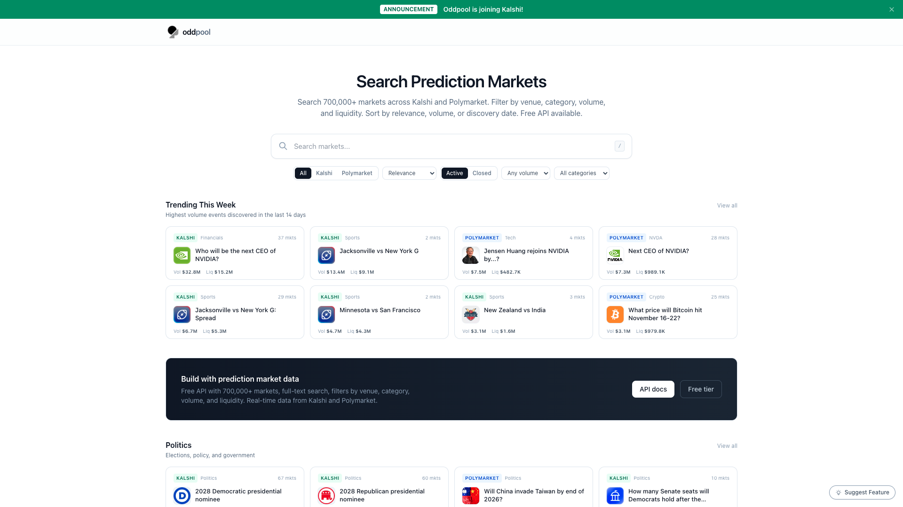
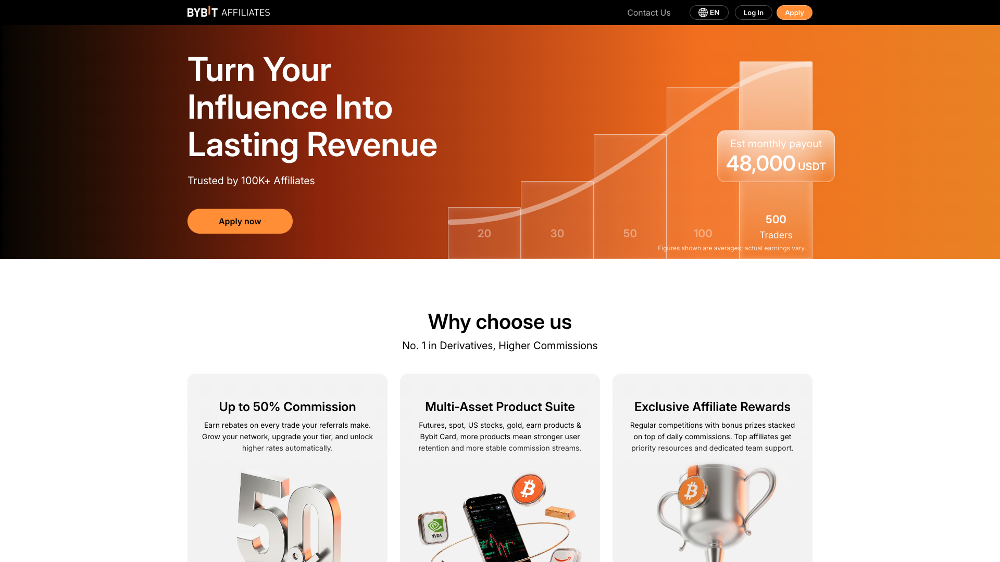

One screen for the decision.
A market, beside the signals behind it. Search trends, Wikipedia, and news today. The index, the price, the book, and the funding rate when you allow them.
Attention market data
Tendex puts analysis next to attention markets, so a trader can look at both before they act. Forum supplies the market and the index. We bring the research layer, and a path to the traders who want it.
Attention market data
Why Tendex
Attention markets are still traded on a feeling. Tendex is the research layer: a terminal for people who want to be early, and who want the decision to be driven by data. A reliable community of those traders is how the market becomes real.
A market, beside the signals behind it. Search trends, Wikipedia, and news today. The index, the price, the book, and the funding rate when you allow them.
Retail and pro traders who want a data-driven way to be first. We teach the market with them, and we add signals as they learn. The ones who are ready go to your waitlist.
We record book history from day one. It can't be rebuilt later. A person reads it on the terminal. An agent reaches it through AI-native access. That is the plan for the record, once the terminal is in use.
The moat
No one else is building the research screen for attention markets. Forum is where the trade happens. Tendex is where the trader decides.
Price, attention, and the book, held as our own history. AI-native access is how that history stays useful when the market gets crowded. The trade stays with you.
Forum × Tendex
Our vision is collaboration with Forum to lead the industry. Forum currently owns a strong first mover advantage. We want to continue to legitimise Attention Markets, by sending traffic interested in gaining an edge through our terminal direct to Forum to trade on your platform.
The path
Our vision is to grow our own terminal by reaching out to traders that fit key market profiles. Institutions, professional traders and those who are looking to get an edge.
Our own business development will involve consistent outreach and community building around gaining an edge in Attention markets. We want to make Forum the beneficiary of this traffic in exchange for a strong partnership.
The index, the account, the trading fee, and the brand. Referrals and affiliates come to you first.
A focused group of data-driven traders, the business development around them, and the terminal they use to decide. Plans to bring in attention markets from Forum, Polymarket and Kalshi.
TENDEx Market Validation Strategy
The first traders already follow attention or prediction markets, and they currently check the market and the signals in different places. We help the interested ones find your waitlist. You keep the account, the fee, and the referral.
To build out the early interest in our Attention terminal, we want to have one clear place for people to apply the insights our product gives. Our community building & social channels will share relevant insights to specific segments of the market that resonate.
As we conduct our initial outreach & get early users on board we will offer seed access to the platform with early benefits in exchange for market feedback. This traffic will be sent to Forum to create valuable users.
As we understand that strongest patterns of engagement, we will scale our outreach to drive Attention market adoption.

How it grows
By leveraging the same foundational user strategy as used in top platforms, Tendex will start to reach early audiences to gain feedback on what users want, offering foundational benefits to early engagers. These users will be sent to Forum.
As users come on board, Tendex will leverage Discord & X to start to build community. We will publish consistent signals around Attention markets & respond to market feedback to allow for a core group to grow with us.
Like every great new market, we will leverage user feedback to offer incentives for shareability to encourage our engaged users to invite others to our platform, collaborating with Forum to launch regular campaigns that drive users. This is the same Playbook that took Bybit from laggard to top tier exchange in < 12 months.
The Tendex team
Ben opens the audience. Leo built the terminal.

Growth and distribution
He has spent the last two years with professional traders and institutions across Asia Pacific. He brings the early traders to the waitlist, and he can introduce a desk when Forum wants one.

Software engineering
He built the terminal, and he is adding the reference signals on it. Applied finance, production machine learning models, and software inside some of the world's most profitable banks. He is the person who would put your data on the screen.
The ask
We would like to show you what we are building, understand which users matter most to Forum now, and explore whether a small research and discovery collaboration makes sense.
The account, the fee, the index, and the brand.
The screen, and retail and pro traders toward your waitlist.
Index, price, order book, and funding rate. Free or a small fee. Your terms.
Two parallels
These are the two examples we will show you. Each is a player that helped build a market before the crowd arrived. The tactics we will employ are the ones in the pitch above, drawn from that record and from our own work with the traders who take a new market seriously.
Kalshi and Polymarket list the same events under different names, identifiers, and prices. A researcher who wants a history has to clean that by hand. Oddpool, a two-person YC company, raised a $3 million seed in spring 2026 to build the missing layer: one search, one identifier, and an order-book history. They did not buy the venue’s traffic. They made the market usable for people who were already serious about the data.
By early September the public product searched more than 700,000 markets across both venues, with historical charts and more than 700 event dashboards. On 3 September the founders, Avi Arora and Ritesh Malpani, said a conversation with Kalshi CEO Tarek Mansour convinced them to build inside the exchange rather than beside it. Mansour called the data layer and the customer list impressive. No price was published. YC now marks the company inactive.

This is the research-layer move in the pitch, and it is the terminal Leo has built. Available today is analysis beside the market: search trends, Wikipedia, and news, on one page. Foundational Members are the high-quality segments, not a wide blast: institutions, professional traders, and people looking for an edge. In the first 90 days we offer them seed access, take their feedback, and send the ones who are ready to Forum’s waitlist. Building Engagement on Discord and X is how that group learns the market with us. We stay beside the venue. We do not join it the way Oddpool joined Kalshi. Once those segments are real, the later step is the one on the pitch: bring attention markets from Forum, Polymarket, and Kalshi onto the same screen. Forum keeps the account, the trading fee, and the brand.
Bybit went online in December 2018 with a Bitcoin perpetual. Ben Zhou later said that three months on, volume was thin, and a referral link was not enough. The people with an audience were paid for a shout-out. They could not tell which post produced a trader. Bybit put most of its early engineering into an affiliate CRM: separate campaigns, clicks, conversions, and a commission the partner could check. That programme is Zhou’s, from the founding years. It is the industry example. It is not a programme we built.
In June 2021 Zhou told Decrypt that in those early days 60% of Bybit’s volume came from affiliates, and that the share later fell to 20–30% once the brand could hold people on its own. That is a volume share, from the founder, not an audited share of users. On a separate point, in July 2020 he told Anthony Pompliano that about 60% of people who registered went on to deposit, and he credited the product and support, not the link. In November 2019 he described client growth of about 50% to 80% a month from March that year. The same 2021 interview says Bybit had aimed to reach 5% of BitMEX’s volume and was by then trading about ten times BitMEX. Those comparisons are his.
The programme is still there. The affiliate page says it is trusted by 100,000+ affiliates, which is Bybit’s own figure. In October 2024 an executive said one partner-token offer brought hundreds of new users in MENA. That is one campaign, also company-reported. Ben’s experience is the later one: 2024 to 2026 inside that market, with professional traders, VIP, and institutional audiences.

This is the Incentivise sharing step, run as a pilot rather than a blast. The early lesson from that market is that partners needed their own numbers, and that the share fell once the product could hold people. Ben spent 2024 to 2026 with the professional, VIP, and institutional side of that audience. That is the experience we are using. The first 90 days take the same Foundational Members from the Oddpool parallel and give Forum a tracked introduction: a small cohort, a clear read on who activates and who comes back, and no copied commission rate. Discord and X keep the cohort in the conversation. Referrals and affiliates come to Forum first. We keep only the segments that hold, which is the later step on the pitch: scale from the strongest engagement.